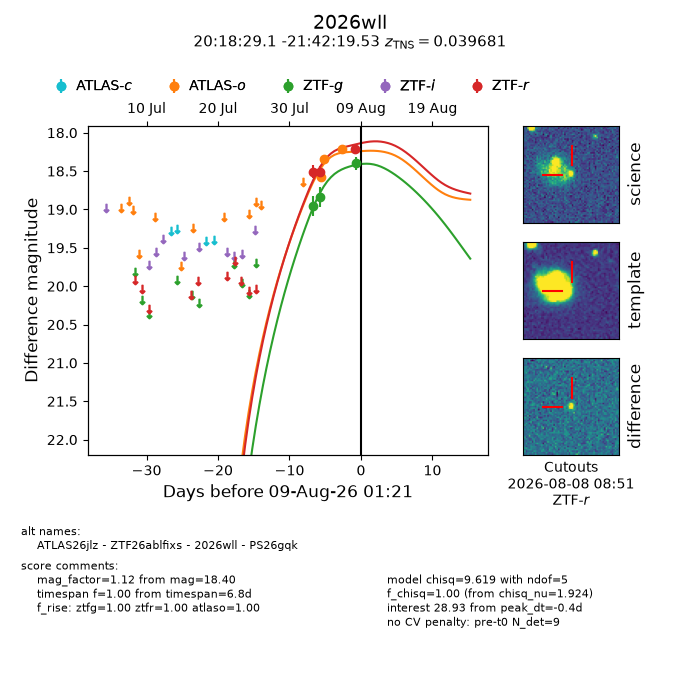
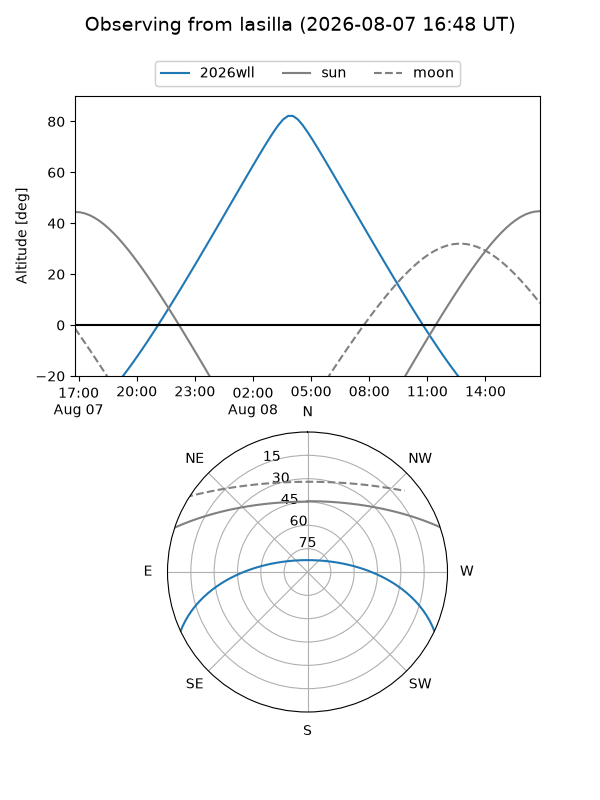
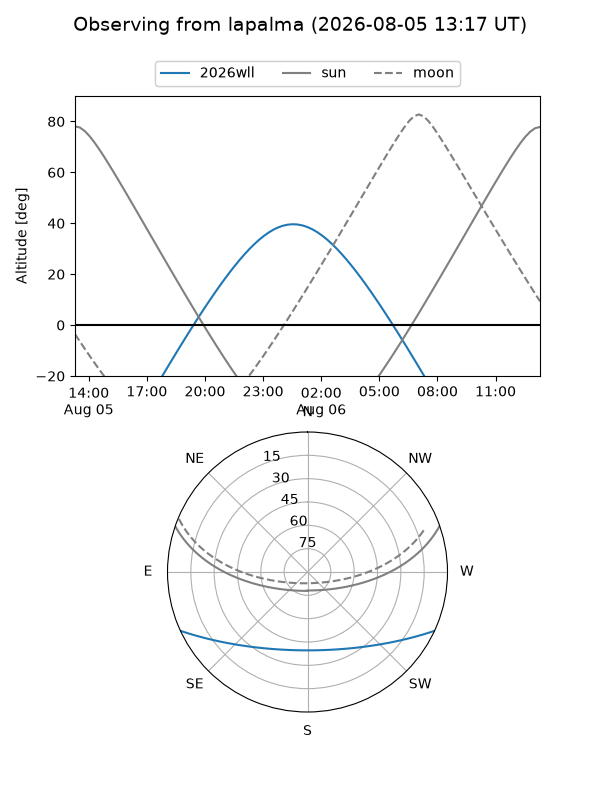
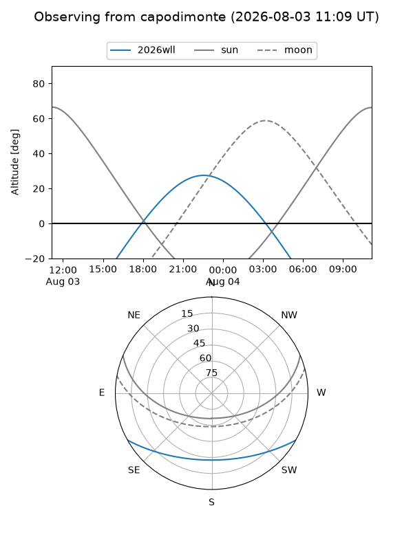
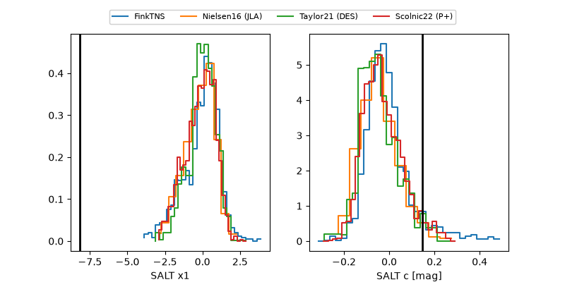

2026wll
Target 2026wll at 2026-08-09 01:24
Aliases and brokers:
FINK-ZTF: ztf.fink-portal.org/ZTF26ablfixs
Lasair-ZTF: lasair-ztf.lsst.ac.uk/objects/ZTF26ablfixs
ALeRCE-ZTF: alerce.online/object/ZTF26ablfixs
YSE-PZ: ziggy.ucolick.org/yse/transient_detail/2026wll
TNS name: wis-tns.org/object/2026wll
Direct TNS query: direct search
alt names
ZTF26ablfixs (ztf,fink_ztf)
2026wll (tns,yse)
ATLAS26jlz (atlas)
PS26gqk (panstarrs)
Coordinates:
equatorial (ra, dec) = 304.6214,-21.70543
equatorial (HMS+DMS) = 20:18:29.13,-21:42:19.53
galactic (l, b) = (21.6538,-28.37280)
Flags:
TNS type: SN Ia
TNS redshift: 0.0397
peak dt: -0.4
Photometry:
last atlaso=18.22, ztfg=18.40, ztfr=18.22
3 atlaso, 3 ztfg, 3 ztfr detections
Lightcurve

Visibility



Additional plots
